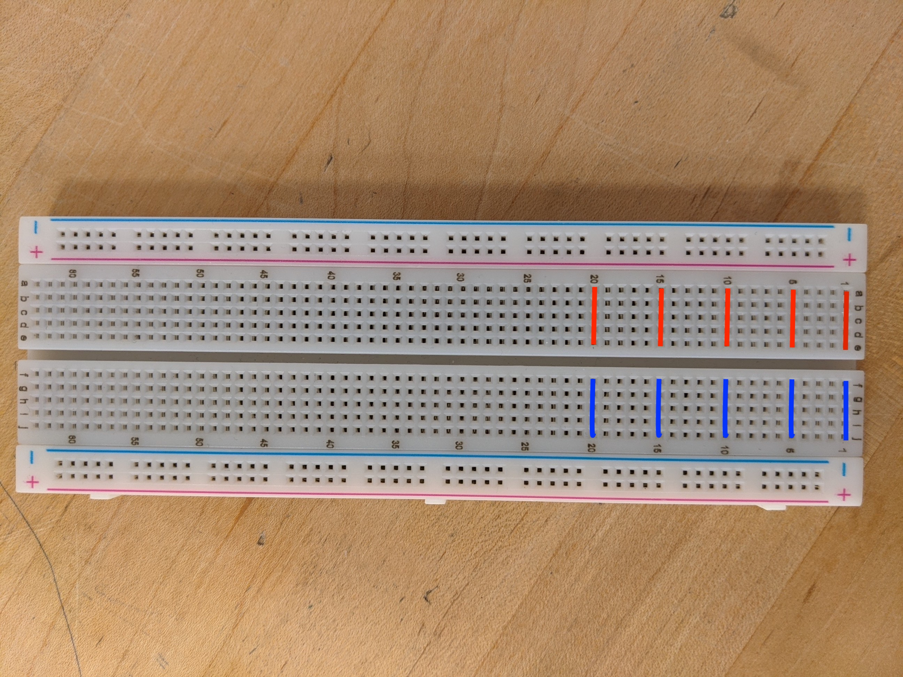

There are many different components in electronics. Some of them you are probably familiar with, such as batteries, switches, and light bulbs. Some are less obvious such as resistors, capacitors, diodes, and many other devices. On top of the standard devices that you are used to using, there are also measurement tools that can be used to find values such as electric potential and current.
Not only are there many components, there are many ways to wire those components in order to achieve different effects. How the components wired affects their function and we will be exploring this with resistors. In these activities you will be learning about circuit and how the pathway that electricity is provided affects their function.
| Resistors | |||
|---|---|---|---|
| We will use two types of resistors. Most resistors are labeled with three colored bands to help you identify what the resistance is and a fourth that denotes tolerance. The first two bands identify the first two digits of the resistance. The third band is the multiplier. There is sometimes a fourth band that represents the tolerance. Below is a key for reading resistors. | |||
| Color | Band 1 | Band 2 | Multiplier |
| Black | 0 | 0 | x1 |
| Brown | 1 | 1 | x10 |
| Red | 2 | 2 | x100 |
| Orange | 3 | 3 | x1000 |
| Yellow | 4 | 4 | x10,000 |
| Green | 5 | 5 | x100,000 |
| Blue | 6 | 6 | x1,000,000 |
| Violet | 7 | 7 | x10,000,000 |
| Grey | 8 | 8 | x100,000,000 |
| White | 9 | 9 | ---- |
| The fourth band gives the tolerance | Gold = +/- 5% | Silver = +/- 10% | |
|
For example, if a resistor has a yellow, then violet,
then red band: Yellow means 4 Violet means 7 and red means x 100 so that would be 47 x 100 or 4700 Ω which we often write as 4.7 kΩ |
|||
| We will be using brown-black-red resistors which are 1 kΩ and yellow-violet-red resistors which are 4.7 kΩ. | |||
| 1 kΩ | 4.7 kΩ | ||
| Breadboard | |
|---|---|
| Breadboard is used in electronics to trial new circuits without the need for soldering. (Soldering is the process of connecting electronic components with heat and a special alloy that holds the components together.) It is important to understand how the breadboard works in order to use it effectively. | |
| The power rails of a breadboard run along the entire length of the board. The lines in the picture show which holes are connected. Every hole along each colored line is connected. | The middle of the breadboard has rows of connected holes. Each row is denoted by a number. The picture below shows the trend of holes that are all connected. Note that there is a break in the middle of the board. |
|  | |
| Each row of holes in the center of the breadboard is its own connection hub. For example, every component attached to row 5 is connected. Therefore you should never have a components inserted with both ends in the same row. | |
| Simple Circuits | |
|---|---|
| Connect the battery to the power rails. Red goes to pink and black goes to blue. The charges want to flow from pink to blue. | Use a jumper wire to energize one of the rows. Be sure to use numbered row to make your life easier. |
| image | image |
| Connect your component to the newly energized row. Be sure not to plug both ends of the component into the same row as this will short circuit the component. Connect the other end of the component to another row. (Preferably a numbered one) | Use a jumper wire to connect the component back to the negative end of the power rail. Remember, all the charge needs to get back home. |
| image | image |
| Short Circuit | ||
|---|---|---|
|
Short Circuits occur because electricity is provided a
pathway to flow in a way that bypasses a component.
Electricity will take the path of least resistance whenever
possible, so if there is a wire with very little resistance
running in parallel to your component, most of the
current will run that way.
There will be two major effects due to this. The first is that the comonent will not behave as expected. This could mean that an LED doesn't light up, or a motor doesn't turn. The other effect can be much more serious. By providing a pathway for electricity to flow with very little resistance, current can increase greatly. This can lead to increased heat, even fire if the component cannot handle the increased thermal energy. |
Resistor
*-----------*-----wwwww------*---------*
| I | | I -> | ^ |
| | | | | |
| | | | | |
| | | | | |
| V | | |I |
*--* | FIRE! | |
*------* *----------------* |
| + | I ----------> |
| | |
| | |
| | |
| | |
| - | |
*______* |
| |
*--------------------------------------*
|
|